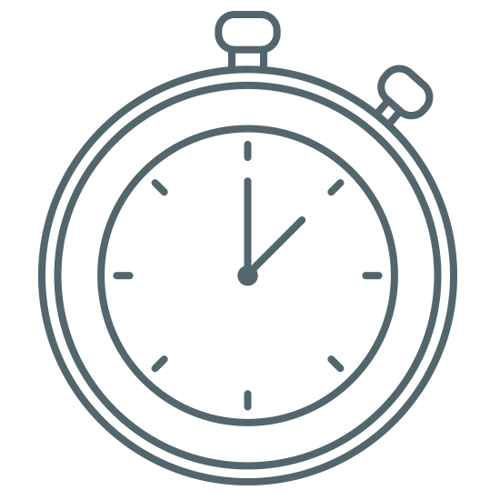

Breathing
Take a moment to take a few deep breaths using this stopwatch!
:
- Sit or lie flat in a comfortable position.
- Put one hand on your belly just below your ribs and the other hand on your chest.
- Take a deep breath in through your nose, and let your belly push your hand out. Your chest should not move.
- Breathe out through pursed lips as if you were whistling. Feel the hand on your belly go in, and use it to push all the air out.
- Do this breathing 3 to 10 times. Take your time with each breath.
- Notice how you feel at the end of the exercise.